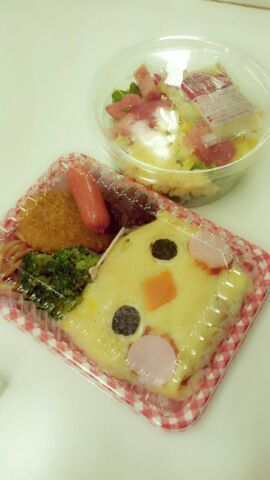

おはよ-ございます )))
ろってぃーですん♪
昨日から大阪公演プリンシパル
が始まりました ！
公演回数も もう残すところ、
今日明日で４公演です(T^T)
梅田芸術劇場まで
来てくださった皆様方
本当にありがとうございました ！
そして 昨日は
野木 美咲子 役 を２幕で
演じることができました ！
本当に嬉しかったです.
皆様に感謝しています (>_<)
ありがとうございます！
ツン照れみさちゃん♪
荒れくるいみさちゃん♪
金魚大好きみさちゃん♪
わぁ〜〜 \(´ ∨ ` )/
実は今日、 初めて親が見に来ます.
前回blogで書いた様に
サスケが天国に行ったため
まひろの親は
まだ一度も プリンシパルを
見に来ていません。
「サスケーーー！！」って呼んだら
全力疾走やん★笑
今日は 天国でおるサスケに
かっこいいとこ 見せる(/^ω^)/
本当 頑張んなきゃだ ！
今日も明日も頑張ります \(´∨`)/
ぴょん ♪
昨日の 皆のお昼ご飯 (^^)

めちゃ可愛いと思って
撮っちゃった ) ) )
ピヨピヨ ヒヨコ.
まあやみたいに可愛い\(´ω`*\)
ほいなら♪ のし ！
好きやねん(〃∨〃)?
ろってぃーより。